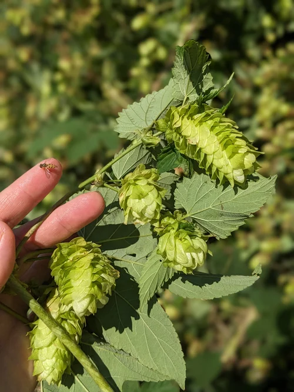
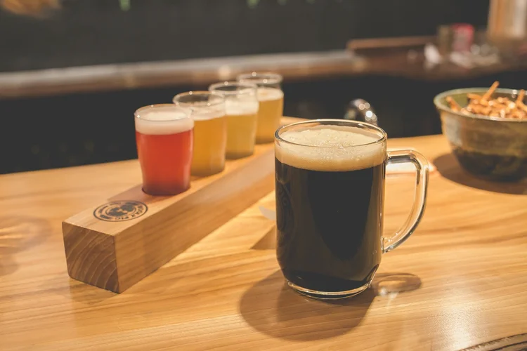
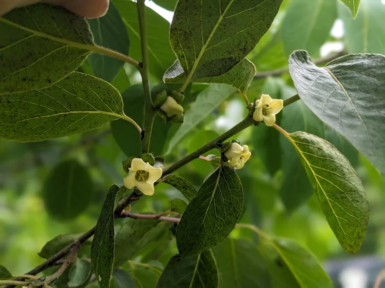

Spring is here at the farm! We've got fresh brews on tap and the patio is open. Come enjoy the sunshine with a cold one. New this week: Hoppy Trails IPA and Barnyard Brown Ale.

Food truck alert! Smoke & Bones BBQ will be here this Saturday from 12-7pm. Pair their pulled pork with our Oatmeal Stout for the perfect combo.

Throwback to last summer's pig roast. What a day that was! Stay tuned for this year's date announcement.
Happy Wednesday! Reminder that we're open 4-9pm today and Thursday. Swing by after work for a pint and some peace and quiet out here in the country.

Watch on FacebookCheck out this video of the pigs enjoying the first warm day of the year!
Our farm is a place where you can slow down, enjoy a craft beer, and take in the rolling hills of Coshocton County. We built this brewery because we believe good beer tastes even better when you're surrounded by nature. Open Wed-Sun. See you soon!